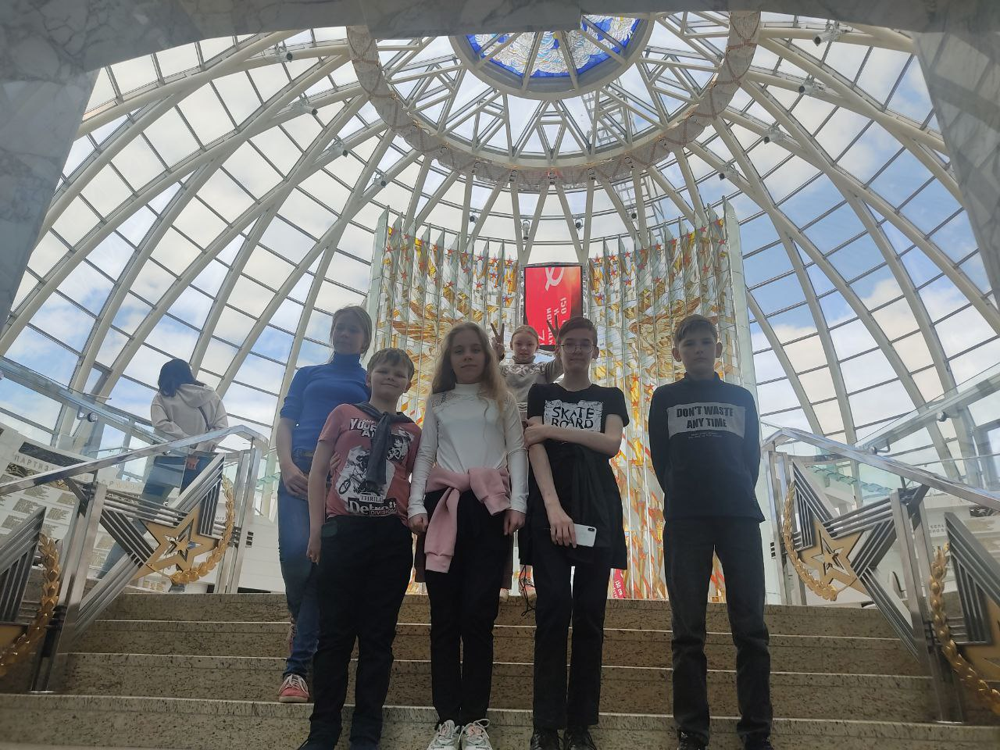

Музей Великой Отечественной войны
Белорусский государственный музей истории Великой Отечественной войны — одно из самых значимых культурных учреждений страны, первый в мире музей, посвящённый событиям самой кровопролитной войны XX века, и единственный в Беларуси, основанный ещё в годы фашистской оккупации. Он представляет собой крупнейшее собрание артефактов, связанных с героическим сопротивлением белорусского народа, а также с общим вкладом Советского Союза в победу над нацизмом.
История музея началась 30 сентября 1943 года, когда в Москве на базе выставки «Белоруссия живёт, Белоруссия борется, Белоруссия была и будет советской» была создана экспозиция с первыми 313 экспонатами, собранными прямо на оккупированной территории. Уже вскоре музей получил здание в центре освобождённого Минска — Дом профсоюзов на площади Свободы. Он занимал 25 залов общей площадью более 1200 м². Позднее из-за аварийного состояния здание было сменено, и экспозиция переехала сначала на улицу Карла Маркса, а затем — на проспект Независимости, где в 1966 году открылся полноценный музей с постоянно действующими залами.
В 2010 году по решению Президента Республики Беларусь началось строительство нового современного здания. Оно было возведено на проспекте Победителей — недалеко от Минской крепости-героя. В основание будущего музея торжественно заложили капсулу времени с посланием потомкам. Открытие нового здания состоялось 2 июля 2014 года — накануне 70-летия освобождения Минска. В торжественной церемонии приняли участие президенты Беларуси и России.
Сегодня музей — один из самых посещаемых в стране, его ежегодно осматривают более 570 тысяч человек, включая туристов из более чем 100 стран. Общая площадь экспозиции составляет более 3000 м². В залах представлено свыше 8 тысяч экспонатов: оружие, обмундирование, документы, фотографии, личные вещи бойцов, подлинная боевая техника, флаги, письма, карты, художественные произведения, архивные кадры кинохроники. Коллекция насчитывает более 154 тысяч предметов, включая раритеты, собранные на территории Восточной Европы, Германии и переданные музеям мира и посольствами иностранных государств.
Экспозиция охватывает ключевые этапы войны — от мирной жизни довоенного времени, начала вторжения, обороны Минска, Смоленского сражения и битвы под Москвой, до наступления переломного момента, партизанской борьбы и массового подпольного сопротивления, освобождения Беларуси, штурма Берлина и победы. Отдельное внимание уделяется трагедиям Холокоста и оккупационного режима, вкладу советского тыла, участию белорусов в движении Сопротивления в Европе. Музей рассказывает о жизни страны после войны, восстановлении разрушенных городов и сохранении исторической памяти.
Особое место занимает Зал Победы — архитектурно впечатляющее пространство под стеклянным куполом, символизирующим Рейхстаг, над которым в 1945 году водрузили Знамя Победы. Этот зал завершает экскурсионный маршрут, оставляя яркое и эмоциональное впечатление у посетителей.
Музей истории Великой Отечественной войны — это не только хранилище прошлого, но и живое свидетельство мужества, стойкости и памяти, передаваемой от поколения к поколению.
Пройди тест для закрепления результата.
Тест